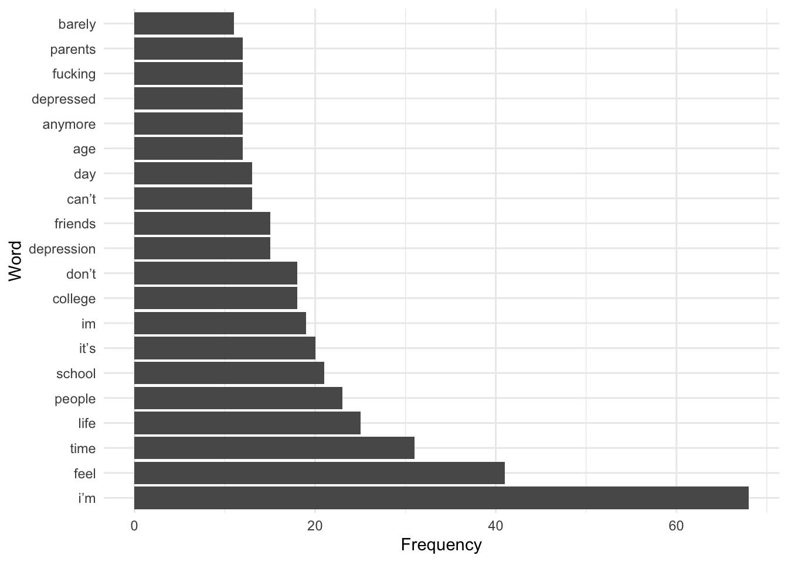
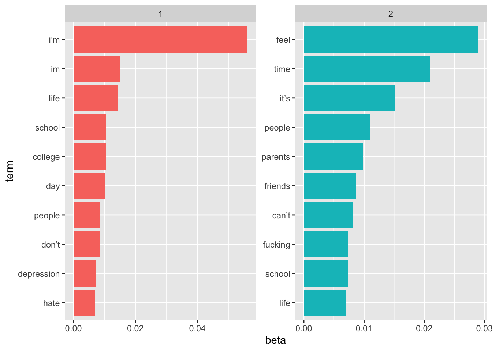

library(ggplot2)
library(dplyr)
Attaching package: 'dplyr'The following objects are masked from 'package:stats':
filter, lagThe following objects are masked from 'package:base':
intersect, setdiff, setequal, unionlibrary(readr)
library(tidyverse)── Attaching core tidyverse packages ──────────────────────── tidyverse 2.0.0 ──
✔ forcats 1.0.0 ✔ stringr 1.5.0
✔ lubridate 1.9.3 ✔ tibble 3.2.1
✔ purrr 1.0.2 ✔ tidyr 1.3.0── Conflicts ────────────────────────────────────────── tidyverse_conflicts() ──
✖ dplyr::filter() masks stats::filter()
✖ dplyr::lag() masks stats::lag()
ℹ Use the conflicted package (<http://conflicted.r-lib.org/>) to force all conflicts to become errorslibrary(stringr)
library(tidytext)
df <- read_csv("/Users/jhanvi/Downloads/Post_Data.csv")Rows: 30 Columns: 3
── Column specification ────────────────────────────────────────────────────────
Delimiter: ","
chr (2): Story, Link
dbl (1): Post Number
ℹ Use `spec()` to retrieve the full column specification for this data.
ℹ Specify the column types or set `show_col_types = FALSE` to quiet this message.head(df)# A tibble: 6 × 3
`Post Number` Story Link
<dbl> <chr> <chr>
1 1 "i’m so depressed. I have been since I was 16 & now i’m 2… http…
2 2 "I literally cannot get any motivation towards furthering… http…
3 3 "i wonder whether my current state of mind is because i'm… http…
4 4 "This. I’m just out of it. Not in a “Ugh I hate this work… http…
5 5 "Growing up to adult\nI was a shy kid and nerd, I did wel… http…
6 6 "By the time im like \"oh hey i know this one\" the stude… http…# tokenizing the data
data_tokens <- df %>%
unnest_tokens(word, Story)
# Load stopwords from tidytext
data('stop_words')
# Removing stopwords
data_tokens <- data_tokens %>%
anti_join(stop_words)Joining with `by = join_by(word)`# Calculating word frequency
word_freq <- data_tokens %>%
count(word, sort = TRUE)
# Print the top words by frequency
head(word_freq)# A tibble: 6 × 2
word n
<chr> <int>
1 i’m 68
2 feel 41
3 time 31
4 life 25
5 people 23
6 school 21# Plot the top 20 words by frequency
top_words <- head(word_freq, 20)
# Create a bar plot
ggplot(top_words, aes(x = reorder(word, -n), y = n)) +
geom_bar(stat = "identity") +
labs(x = "Word", y = "Frequency") +
coord_flip() + # Rotate labels for better readability
theme_minimal() # Apply a minimal theme
# Topic model
library(topicmodels)
# Getting only the text
story_col <- df$Story
story_col [1] "i’m so depressed. I have been since I was 16 & now i’m 22. all i do is spend hours in my bed. just sleeping because that’s the closest thing to death without actually killing myself. i love the escape that sleep offers & hate waking up. all i want to do is sleep. when i’m not sleeping in my bed, i’m on my phone in bed, i’m eating in bed, & i’m attempting to do school work all from my bed. it’s the only place i feel comfortable & safe.\ni have no friends, only acquaintances. i don’t think anyone truly knows me or understands what i go through when i have a depressive episode, i hide it all. not letting anyone in, just perpetuates the loneliness i feel every single day. i just want to be loved but i feel so unworthy. the people i do tell, like my mom, does not understand & she never has. she thinks i just need to change my “outlook” or “attitude” which pisses me off because if i could, i would.\nbeing depressed makes me feel so weak. like i have no control over my mind or body. why can’t i just be happy? i am so privileged & yet all i can do is ruminate on how miserable i am. like why the fuck can’t i get my ass out of bed & do something? i don’t want to waste my life away but every day is a battle & struggle & i’m sick of trying so hard just to live.\ni’m so lonely because all i do is spend time in my room. i’ve tried to make friends on campus by joining groups but i’m so awkward & anxious & i never speak up unless i’m spoken to. it’s not like i’m not trying or making an effort here, i really am but nothing seems to work out.\nbeing in college is the most depressed i’ve been. every day i want to drop out. i skip classes every week. i don’t have the motivation or energy to go. my mom is really pushing me to go & there’s a lot of pressure from my parents to get a degree but i’ve been undecided for 2+ years changing my major 3+ times now & i feel purposeless drifting through school. i want to take next semester off and just work, figure out what makes me happy & maybe go back to school when i’m ready.\nanyone who can empathize or offer some wise words would be appreciated.\nfyi: i’m on antidepressants (4 years now) & am trying to restart therapy after i stopped because i was doing really well this summer. starting school really took a toll on my mental health"
[2] "I literally cannot get any motivation towards furthering my education or my future, even though I genuinely find what I’m studying really interesting. I would rather sit around and sleep, play video games or anything else, and because of that my GPA is suffering horribly, which in turn affects my depression, and so on.\nI started going to therapy once a week and am considering going twice a week to at least help me with the depression aspect. In terms of the other stuff... well I’m lost.\nI’m starting to think the problem is deeply rooted, because I also did this is middle school and high school, as it was never an issue for me to keep up with grades while not trying. I know I’m a smart kid, but it’s almost like pulling teeth to get me to do anything that doesn’t bring me immediate happiness.\nI don’t know where to start."
[3] "i wonder whether my current state of mind is because i'm doing so inconceivably poorly in school. i finish school next year, i constantly wish something would happen so i don't have to live til graduation in spring of 2014. i wish i could disappear, or never have existed, or something, anything, so i don't have to confess this to my parents. i feel so horribly about the annual $57,000 tuition they pay, only to have me squander away my days in college feeling hopeless and utterly unproductive. i've dropped more than eight classes, i have a D on my transcript...i don't want a future anymore. i dont want to find a fucking internship, i don't want to go to grad school, i don't want to confront the reality that i've fucked up so badly that there's no chance i'll find gainful employment in the near future.\nhow many of you feel depressed due to academic failures? is it still depression if you feel the solution to all your problems would be a clean slate from first year?"
[4] "This. I’m just out of it. Not in a “Ugh I hate this work” kind of way. I’m burned out as in I have stopped taking notes, started to intentionally distract myself during lectures, and I’m just trying to forget about all my work in general. It’s led to me not studying, consequently failing tests, and having more questions than answers in my life. Now I know it’s normal to fuck up on the first test of the semester; Everyone does that at least once in their life. It’s NOT normal to just stop doing any work whatsoever until the last minute. I have no idea how I’m going to continue on, even after Spring Break."
[5] "Growing up to adult\nI was a shy kid and nerd, I did well in school and all that shit and obviously never had any intimate experiences.\nI'm 21 now and apart from my thyroid issues which I'm working on, it has affected my performance in university so academic wise ,I've dropped. Also, I spent most of my time in isolation and depressed. IM consulting doctors, I swear it sucks, who knew.\nAnyways my point is, most guys see me as this innocent, holy kind of girl with manners ans wife material\nTruth is I've changed alot, I'm so eager to explore my sexuality both with boys and girls, and I'm not ashamed of it. Being 21 and single hasn't helped me. For the most part, I have a fear that I will be so good or bad for this person ,they may want to settle or have a kid and I'm not letting any asshole get I'm the way of my plans.\nI'm sure there some good boys and girls bt being shy or depressed all the time doesn't help. In short, I want to have fun and still focus on my career. Once I focus on my health and know what to do, which medicine, I'll be able to concentrate in class, but other aspects are important.\nAlso, we never had sex education in school so most of my peers either they have a kid or did more than one abortion. Any advice before having sex or having a first kiss, would be helpful.\nI've realized not to ignore health Also, I always thought that being tired all the time was normal and there are memes for it bt no, I'm more attentive now.\nSome guys hit on me bt if u aren't interested, and lead them on, they do get mad or most guys want sex and u to follow them. I'm very feminist and don't allow men to tell us what to do.\nJust want careful causal sex with guys who want the same. For once I stop being seen as this goody to shoes, I hate it I really do, don't tell me it's a good thing I don't see myself settling any time soon and no one is making me.\nDefinitely career oriented bt this aspect of dating is missing. I don't want to be one of those ladies who has never been touched by a man surely ans the way there are hundreds of them\nAnd also how to u avoid older men hitting on u, this happens to all ladies, not only me, I absolutely hate it, like get people ur age, this one's are dangerous cause they will just see u as a kid. I personally look at them baldy and don't give a flying fuck abt their needs. I'm sorry , they should do better and find women who want older men.\nOtherwise, any advice is great"
[6] "By the time im like \"oh hey i know this one\" the student in question has answered fully. I respect students who know what they are talking about but let the rest of us answer sometimes! Its always ONE student and its gotten to the point where the prof has said \"i wanna hear from someone who hasn't spoken yet\" but they still won't take the hint! They go on side tangents half the time too and slow down the lecture, i don't wanna hear your life story every psych class!\nI get being engaged and excited about the topic but there seems to be a lack of social awareness present in these types. I will open my mouth to answer and they will straight up cut me off and talk louder to say the exact same thing. ugh. If you do this just know I wanna throw pencils at your head."
[7] "I am just chronically worried. College stresses me the fuck out. There is so much to balance and my productivity plummets because of all of my wasted time worrying. Who can work 30 hours a week, take anywhere between 12-18 hours, properly investment in interpersonal relationships/friendships, eat healthy, workout and engage in hobbies. How do people do it? I find myself chronically missing deadlines, not responding to peoples texts, end up eating shitty fast food, and just always getting so overwhelmed where I wanna hide in my bedroom for three weeks and hope it all disappears. When I attempt to calm down it just is apathy and I’m not actually finding any transparent connections with myself. I keep thinking to myself, “fuck If you don’t get A’s, you can’t get into grad school, your just gonna have all this debt, look your friends have degrees and can’t find jobs it’s hopeless” it’s death man. It’s death. I understand that habits and time management would dramatically help me but I mentally am just off in my head too much. My shitty breakup has made it harder to. I can’t just take semesters off anymore because I’m 23 and spent two years dropped out just because I’m depressed. I’ll go to therapy try random medication but no matter what somethings always fucking me I swear"
[8] "I am tired. I do not want to do anything. I do not want to talk to anyone. I don't want to see anything, I just want to lie down and sleep all day. Forget about my existence.\nIt's so tiring trying to focus on other things just to avoid being idle, because that's when I realize how shitty I feel. I can't go a day without thinking about ending it all. I wish I could communicate with my family, and that they would understand. I am exhausted.\nI feel so pathetic."
[9] "Like the title says, my dad is dying and I can't deal or do anything about it. I'm stuck at work while he's in the hospital getting emergency radiation. I can't get there because I'm literally the only person here. My mom says there's nothing I can do up there, but I still terrible that I can't be there. He has carcinoma that has spread from a huge spot on his lung up to his brain where he has several spots. I know this won't end well and it's not going to take very long to run its course. I'm depressed. He's not even the same person that he was. It's absolutely heartbreaking to watch one of the strongest men that I know be reduced to this. How do you even deal? This man taught me everything I know in life and made sure I was taken care of no matter what. I feel helpless and out of control. I wish there was some magic cure, but there isn't. There's just pain on the horizon and it's not looking like it's going to improve anytime soon. It's shit watching your parents die. Idk if I'll ever get over this one."
[10] "Am I losing in life? In June I will be turning 26 but I don’t feel like I’ve done great things in my life. I get excited about something, I go all in for a while and after the initial excitement is gone, I fail in staying disciplined. My social life sucks. I’m in debt. I’m living with my parents. I work a dead end 9 to 5 job. I’m still addicted to p0rn. I don’t want to be too hard on myself but the last two years life feels so dull and it’s just passing me by. I haven’t told this to anyone because I don’t want to come across as a victim, but it’s really starting to eat me up from inside. Anyone else who experienced this in their 20s and survived? Thanks in advance for all answers, appreciate it!"
[11] "I can not keep up with the sheer amount of tasks I have to do as an adult. I am completely overwhelmed. How does everyone function? I literally can not keep up with all the tasks that a normal responsible adult is supposed to do. I made a list of all the things I feel like I should be doing everyday and it seems like SO much. Make bed, Get dressed, Sunscreen (I am very pale and skin cancer runs in the fam), Brush teeth, Make breakfast, Eat breakfast, Pack lunch, Brush teeth, Do my hair, Make up, Walk dogs, Go to work/school, Take dogs potty, Homework, Feed dogs, Feed gecko, Make dinner, Eat dinner, Wash dishes, Clean up house, Some type of exercise. Walk dogs again. Shower. Lotion. Skin care routine, Brush and floss, Change into pjs, THAT IS LITERALLY 26 TASKS I should be doing per day!! And that doesn’t even include the other things that are not daily like: Pay bills, Clean windows, Clean out car, Wash car, Laundry, Clean toilet/shower, Sweep and mop, Vacuum, Take out trash, Grocery shop, Clip nails and toenails, Wax eye brows and other body hair, (Im sure im forgetting stuff) I’m sorry but even without depression this just seems so overwhelming to me, sprinkle depression on top of it and its unbearable. I literally accomplish maybe 25% of this and my life feels like a disaster right now. I don’t understand how people can do all these things and still have time for friends and fun. Oh also, parents???….SINGLE parents??? HOW??? There is so much freaking stuff to do and so little time for any of it!!"
[12] "how do people go through college. im a freshman in college right now and i fucking hate it. i have little to no motivation nor energy to do anything. i always feel anxious, sad, or tired all the fucking time. im barely in my first semester but i cant do anything. i ask people for advice to cheer me up and they always say to do something i love or find joy in but the only thing that comes to mind is play video games. i tried to play for a few hours but its still the same. i also tried going out to socialize but again nothing fucking changes. im not happy im not energized im not motivated i feel like shit. im barely even eating anything. i hate being like this. im so scared that i might break down and barely make my first year. i dont even know if i like my degree or my school. there is literally nothing driving me to do my best except maybe my family but even that just is barely anything for me to hold onto. like how do people survive their first year and still be ok with what theyre doing."
[13] "Today my depression won, I dropped out of college. My depression won today, I couldn’t keep going as I was. I thought I could handle it, I really did. I was excited to study my major, but I couldn’t handle it. I started missing classes, forgetting to take proper care of myself. My room became a mess, and so did my grades. My parents are coming down tomorrow to pack my things up and bring me home, they’re going to get me the help I need, going to keep me under their supervision. I feel guilty as hell for wasting so much money and time for college when I knew I could never handle it with the way things are. My heart feels like it’s in my throat, my head feels like it’s stuffed with cotton. I’m going to have to quit my job and find a new one once I get home. At least I’ll try to find something to keep me sociable and busy during the day."
[14] "College destroyed my self esteem. I cant do homework, I cant remember deadlines, I cant just sit down and study(with the exception of history because thats my only fun class), Im terrible at keeping up to date on the events around the campus, I am scared to socialize. I want to be more social and im not bad at speaking but I didn't realize how hard to was to actually pay attention to what the other person is saying. its super tedious and extremely stressful to just smile and nod because you didn't hear what the other person said and you dont even know if that was the correct response or not. I know nothing of the world, never had a job. dont have a car. dont have money. Passions I have, but they are all so weak and random I just dont see the point of even mentioning them. im just so lost right now... I just want to play video games all day..."
[15] "Struggling immensely as a young adult with mental health. Hi guys, I hope you're all as ok as you can be. I'm on my phone btw. I'll try and keep this as concise as possible.. I'm a 24F. Previously diagnosed with mixed depression and anxiety, then EUPD and most recently high trait neuroticism with recent reactive depression. Been on antidepressants, mood stabilisers, zopiclone, diazepam, antipsychotics and beta blockers. The only medication I take currently is Propanolol but that's PRN so I take it absolute maximum three times a week. I am not in any therapy or treatment. I do self harm. I'm really struggling with taking care of myself. Like really, REALLY struggling. I don't brush my hair enough and it gets really knotty. I do brush my teeth twice a day and shower daily (95% of the time). I don't cook for myself or wash up or do laundry. My roommate comes home weekends so I do a big frantic tidy up the night before they come home. But if they didn't I would just live in my own filth forever. I have months of dirty laundry in my closet currently which I can't bring myself to do. I live off energy drinks and fast food. I, and I cannot stress this enough, fucking hate my job. I don't seem to have the energy to do anything. Bending over to pick rubbish up at home? No I'll just leave it there. Cleaning a glass so I can drink water? No I'll just find something else to drink out of. Putting clean laundry away? No I'll just leave it in the dryer and take it out as and when needed. Some of the things, if I did them, would actually help me conserve energy and time in the long run. I'm aware of that, and yet still don't do it. My mood is also incredibly fucking low but what's new with that hey. Just wanted a rant. Any advice that might help?"
[16] "I’m depressed because I miss being a teenager. I can’t move on. I’m 23 years old and I miss being a teenager, I miss everything about it. I wish I could have stayed 16 forever. I still haven’t moved on, I still like the exact same things I did when I was a teenager, I still have the exact same interests. The only problem is I’m a 23 year old man now and all of my friends have moved on and are living their adult lives. All of my friends from high school went to college and are starting their careers, they don’t seem interested in the same things we were interested in back then which is understandable but it just makes me so sad. I don’t have any friends for this very reason, most of the time I’m just at home alone. I never went to college, I have a job but they barely give me any hours so I barely even work. My teenage years were the best years of my life, I was so happy and that’s when I peaked. Being 23 sucks because people expect me to start acting like a fully grown adult and it’s just so overwhelming for me. I still feel like a teenager, I still feel young but I feel like I’m not allowed to show that anymore because of my age. I am so jealous of people who are currently teenagers right now, they get to still have fun and live their teenage life with their friends while I’m just a 23 year old man wishing he was younger again. It makes me so depressed."
[17] "I hate that teenagers/young adults with depression have this stigma that they're just spoiled or snowflakes or \"don't know what true hardship is like\". I understand that there are teenagers/young adults who do present these attributes and not every older adult sees teenagers/young adults with depression with this stereotype, but whenever someone has access to my medical history (doctors etc.) I can't help but feel that that is what is going through their minds. Even if they are really kind, supportive and show no signs of such thoughts, in the back of my head I can't help but feel that they are judging me as this \"spoiled little snowflake that doesn't know what true hardship is like\". A couple years ago a doctor was prescribing me some antibiotics for an infection, I was worried that it would conflict with my current antidepressants so I double-checked with him. When he looked through what medications I was taking he said: \"why are you taking these?\". It's possible that he was curious as to whether or not I was taking these for depression or another mental illness, but the tone of his voice seemed to indicate otherwise. Even before this encounter I have always felt this way, but I guess this event empowered it even more."
[18] "I have been an extremely depressed child, tween, teen, young adult and adult. At age 4 I understood my own mortality and I really internalised the truth that I am going to cease existing once. Which is duhh, normal, but it was pure horror at age 4 (I am not 4 anymore, I came to terms with that at around age 12, after thinking about it every day for 8 years. Plus I have THE tendencies now so it went in the opposite direction). At age 6 I had my first panic attack (first of so many to come). Age 7: depression diagnosis. When I was 8, I saw how meaningless everything is, and after summer break the teacher asked us, what was the most fun thing we did during the break? And I said the times I slept (because then I was not thinking about these truths of life, I mean how cruel it is that I have been cursed with consciousness). Between like age 10-16 woke up every single night at 3 am and couldn't go back to sleep. I started having frequent panic attacks. Started self harming at 15. I struggle with self esteem, always hated myself and so did everybody else (bullied kid) I am ugly, very very ugly. Obviously had and probably still have an eating disorder. I started having these rage fits at around age 10, breaking things and my knuckles. My OCD was really bad even as a child but by age 14 I frequently collapsed onto the ground pulling at my hair or pushing my face on the floor because I couldn't shut it up OR quiet it or even keep up with it. First attempt at 18. Age 18-24: dropped out of university. Two of them. The longest time I kept a job was 1 month. Hospitalised twice. Had one 5 month relationship and one 1 month relationship. For a decade I have been seeing a psychiatrist. I had many diagnoses. I have been on ssri-s, snri-s, mood stabilisers, antipsychotics and benzos. I have like 3 healthy teeth. (about 25 fixed, 4 more to go. I just didn't brush them). I had many therapists. I had a 3 months long 5 days a week therapy. I did psychotherapy and analytical therapy. I tried CBT and DBT. I work out and meditate every day. I am medicated. I am deeply unhappy. I never been happy, or even okay. Do you think a person who lived nearly 3 decades so unhappy, miserable and depressed can ever find peace? Or experience joy? Or be okay? Is this just me? Are some people born like this? (I don't have any traumas, very normal childhood with loving parents)"
[19] "I don't know what to do anymore. I'm so behind on schoolwork, and each time I think about even sitting down to do my assignments I feel so much dread and anxiety. I have finals in 2 weeks, and I know I'm going to fail. I've been having major depressive episodes and was recently hospitalised because of something I did to myself. I've present nearly all of the symptoms for ADHD and talked to my doctor, and my parents, and a mental health nurse, but no one seems to take me seriously. I don't know what to do. It's getting bad again."
[20] "I dropped a course in which I was struggling with the material. I felt like I was going to barely pass (I was going to probably pass, but not well). This means I have to graduate with another cohort. I am disappointed in myself and others tell me its okay to graduate another year and take a break for my mental health but I feel very ashamed of myself and I might regret my decision later. Any advice?"
[21] "Hey, I‘ve been dealing with some pretty bad high functioning depression since 2022 (lots of family deaths on top of grueling college semesters, not a good set up) and I have no idea how to get out of this. I feel so stuck. I’m going to bring it up to my therapist but I kind of wanted to get some advice from a wide net of people if possible. I just need help.\nMain issues are just that I barely have the energy to do anything but I force myself to go to classes and complete homework no matter how I’m feeling. I only do homework. I only go to classes. My life revolves around two majors and a student research job and I can’t stand the stress of it all anymore. My gf is multiple states away, I have little to no friends in my area, and I’ve been heavily disassociated since 2022. I’ve gotten really numb and my brain just hit the “time to turn on everything you’ve ever loved and hate it” and it’s about to take me down. My main hobby is art but I never have time for it, and even when I do my brain hates every aspect of it. Everything and everyone irritates me even though they do nothing wrong. I know most of my issue is college but I’m about to be a senior so I feel like I just gotta keep going, but oh my god, it’s getting hard.\nI’m not on any antidepressants but I’m honestly scared of side effects— I’m on sertraline, but it’s for anxiety. I’m trying to spend more time outside but winter is still passing through here.\nI don’t know. Does anyone have any advice? Any tips or activities or literally anything that might help?"
[22] "I am a freshman at ASU studying finance. The second semester has been a pretty shitty start for me. For starters, I was not looking forward to returning to college. This is because I feel so lonely at college due to not getting invited by friends or having a beautiful girlfriend. Every weekend, I just rot in my dorm. It drives me insane. I also don’t feel like I fit in with others because I’m so socially awkward, boring, and not as street smart as the others. I isolated myself in high school from others because of this and had 0 friends. I feel sick of being this way now ever since end of semester one.\nNot only that, but I just feel extra demotivated this semester and struggle with academics too. I was always demotivated to do shit. I had a 3.9 GPA last semester, but I’m already failing two classes this semester. I got my Math 211 Midterm back Friday and I failed it and it dropped my grade from a 75% to a 54%. Im also failing Sociology 101 which is an easy A+ because my dumb ass forgot to do two quizzes. My parents sometimes make me show my grades because they’re paying for my college. Even though they’re not the strictest, they still nag me. I have been yelled at for bad grades in the past though and sometimes threatened to be grounded back in 10th grade and before. The day after I got my math test back, mom made me show my grades and she wasn’t mad, but she nags me to go to TA and professor office hours every week instead of tutoring hours for help. She says to go to them every time it’s available and it’s so fucking annoying. She nagged me to do the same last year when I had a great grade in math until I got annoyed. But now that I’m failing, she’s nagging me again.\nWhen I wanted to start college, I believed that I could get a fresh start from high school and be more motivated to do things like make steps towards fully finding out which career I want and taking steps towards it and learning how to invest and shit. But I’m slacking off on those so much and when Im not at classes, clubs, doing homework, or working out at the gym, I just scroll my phone and computer like the fucking loser I am. Im still the same pathetic, socially awkward, boring loser I was born to be.\nTo be honest, I have struggled with mental health issues since years ago. But I feel extra hopeless this semester.\nAnd I try to tell myself to improve time management and learn investing and make more time to read books because I want to rush a frat next semester to force myself out of my comfort zone and learn how to be less socially awkward and have fun. It will be a lot of commitment, especially during pledge semester. But I still waste time like a loser.\nI don’t fucking know anymore. I feel so fucking hopeless at this point."
[23] "Hi everyone, I’m currently doing a motor vehicle course at college 6 months into it, I can no longer go In. I have a huge mental block, I feel trapped when in the classroom and I don’t really enjoy it, had a panic attack a few months back and I haven’t set foot in the class since. I have been through a lot recently with my dog passing away and grieving the loss of a relationship with my grandparents due to family fallout. I am running a business doing car detailing and it’s the only thing that is keeping me going atm. I feel more and more like I want to drop out but I’m so unsure. I had been doing counselling but my sessions are on hold as they weren’t helping. And I have a psyciactric assessment soon for anti anxiety medication maybe, but I can’t get rid of the thought in my head just to drop out and focus on my business. It makes me feel to shit and low missing it as it feels a bit pathetic that I can’t. Idk any help would be appreciated"
[24] "I have never posted on reddit before, but this is one of the few ways I know how to seek help from a community of people going through similar things.\nI have been diagnosed with depression since 2nd grade elementary. I am now a second year in college. I want to drop out. I have not had the energy to get out of bed, let alone go to class, for the past several months, and I am failing all of my courses except for two (which I have a C- in, not a passing grade, still). I have told my dad about what i am going through, and he understands. I have not talked to either of my parents about dropping out. I feel so guilty for wasting their effort and money, but i dont see the point in continuing if i wont even pass the courses or make it to class. My mom talks to me a lot about money and how expensive things are, so i know that me dropping out may help with that, other than the wasted money we all spent getting me in and paying for the last three semesters. I just dont see any other option.\nI also do not have health insurance, so i do not know my options for seeking medication. My mom let me get in therapy when i was younger, but never seemed to take it too seriously, so ive never been medicated before.\nOn top of that, i was trying to move out of my apartment earlier last month, because i cant afford rent and my bills all together (i am a server, also looking for other jobs). And the person who was supposed to move in told me she doesn't want the place anymore, so i am stuck paying for rent and have to move back in to save on gas.\nAll around, i just feel stuck. i feel pathetic for not being able to pull myself out of this when i used to be able to. I just feel like i dont have anything in me anymore and i have no idea what to do.\nAny comments or advice are appreciated."
[25] "I hate my life so fucking much my grandma doesn’t want me around I only have one best friend her name is Claire she doesn’t talk to me as much since she has a boyfriend know. I’m a 16 African American I’m short and black not a good combo it was this one girl I liked and I talked to her and asked if I can get to know her more and she gave me her number and said yeah you can get to know me more I think she was just trying to be nice because she never responded to any of the text the next day I seen her with another dude hugging and kissing him I wish she would have told me she wasn’t interested I would’ve rather that the guy she was with keeps showing everyone the sextape around school and a lot of people keep saying he took my crush and he’s been bragging about to me I’m typing while I’m at school I’m going to a bunch Melatonins when I get home I can’t wait to leave this earth my mom passed away when I was eight and I’m still not over it I talk to a therapist and still doesn’t help thanks for reading this I get home I’m 3 hours what’s the point of living if no one is ever going to like me I’m 16 and never had a girlfriend I’m sorry for my typing.\n\n"
[26] "I have made a decision tonight to commit suicide. I had stopped my meds a while ago and gained a new perspective and found Allah. Now I fear I may burn for this transgression but I'm willing to risk to stop living with who I am right now. I have learned that I could possibly have scoliosis and have no intention of dying a slow and painful death from a degenerative spinal disorder. My posture and body are all uneven and I have tried to improve my posture but to no avail. I have had a history of self harm and attempted suicide and this is yet another hurdle in a life I never wanted to live in the first place. I have come to peace with what I need to do and If I do not do it tonight it will happen as soon as I can. I may be weak and lazy but when I barely have enough energy to get out of bed I cannot do the exercises I need to stem the tide of this condition. I sound extremely lazy but I cannot physically make myself do anything anymore. I have also wondered what is in the great beyond and if it is damnation I will face the flames with more hope than I ever experienced on this plane. Goodbye"
[27] "t took years to come to the point where I am comfortable with the idea. I know exactly how and where I’ll do it. I just have nothing left. My family never loved me, which caused me develop into an awkward and weird person. I used to love my daddy, remember him coming home every night and getting so excited I’d fling myself out of bed every night to hug him.\nMy mom and dad divorced when I was around 4, I was heartbroken and thought my mom was so mean for getting rid of him. I didn’t cope well. Anyway, he ended up being a deadbeat who didn’t give a shit about his daughters. One time, he even compared us, and said my sister was better looking. I was fat then lol, lucky me I was the less attractive daughter I guess! :)\nMy mom stopped hugging me when I was 5-6, and I didn’t understand why. She blamed me constantly for things, and tore me down when I was already low. My passions and interests were annoying to her.\nI have developmental issues (ADHD) that went untreated and no one tried to help, so I dropped out of high school. By the time I was a teenager, I was so extremely antisocial that I lost connection with everyone. I only learned how to read and fear people, how to stay off their radars to protect myself. I erected walls around my heart and mind.\nAt this point, I self-sabotage any relationship that could possibly be good out of fear I’m going to be rejected, my standards for friendship and love are so high they belong in a novel, because no one will ever be enough for me. And I know I’m not enough for anyone either.\nThe last crutch I had just crumbled underneath me. I have literally nothing to live for anymore, other than my animals and one other person.\nI’m probably going to do it soon if I can’t find another crutch. I’m barely coping with this life.\nAll I wanted to was to know the unconditional love of one human who could see the good in me despite my problems. But the world is no one’s paradise, and I’m too weak to make my own. This place is tough."
[28] "want to love life so much but I can’t bring myself to want to be here because at my core, I know I’m someone who can never be loved. Most of the people I have loved have either died or have abandoned me. I try so hard to be nice and funny but I’m just not someone people want to be around long-term.\nI have friends but I know if they ever got very close to me, they would leave me or let me down if they haven’t already.\nI feel like I have no one. I have exhausted all avenues for making the most of life whether it be travelling, exercising regularly, having a career, meeting with friends, going on endless dates. I don’t consider myself unattractive - I’m just one of the people of the world who don’t have any light to attract people to them.\nI haven’t told anyone how I feel - not even my therapist. I find it so shameful and embarrassing to be so unlovable when so many people effortlessly have loads of family and friends who consistently show up for them.\nI have intrusive thoughts about scenarios such as dying alone and having no one at my funeral, or being terminally ill and people not wanting to visit me. It terrifies me and makes me so so sad. The solution which gives me peace but also devastates me is to prebook a cremation, make a note that I don’t want a funeral, and just leave this world.\nWhat do I do? How I feel is so agonising and I’m so tired…"
[29] "I'm so starved for touch that when I get in bed, my immediate reaction is to hug the pillow. I can't fall asleep any other way anymore. I don't really deserve a hug — I've been a failure, nobody's life is better because I'm in it, I've turned myself into a ghost. Loneliness is something I brought on myself. Maybe when I start therapy I'll learn how to stop being so insecure and afraid, and I'll become someone who's worth being around ... but that doesn't help me now, because I'm still lonely as fuck and desperate for a hug that isn't coming"
[30] "I (16F) hate my life i know things could be worse but it feels like everyones life is better than mine. My friends seem to have better relationships with their families than me I’m always jealous of them because they have close relationships with their parents especially their moms and mine barely talks to me. My mom won’t kick my dad out even though he drinks all the time and is a alcoholic and he frequently cheats on her and she doesn’t listen to anything I say and how his drinking bothers me a lot. I also seem to can’t get a job anywhere and then people my age get them quick and easy. People at school also have cars and their license but Im pretty sure Im not getting either anytime soon. I compare myself to people around me all the time and get jealous all the time and wish my life was different. I think about suicide a lot but I’m not gonna do it but i cry almost every morning or night about how bad my life is and how i wish it was like others around me. It feels like i haven’t been actually happy in a long time and i always look through pictures of when i was happy and didn’t care about what anybody said or compared my life. Am i just being a dramatic?" # Load the stopwords dataset
data("stop_words")
# Remove stopwords
fil_story_col <- tibble(text = story_col) %>%
unnest_tokens(word, text) %>%
anti_join(stop_words, by = "word") %>%
summarise(filtered_text = paste(word, collapse = " ")) %>%
pull(filtered_text)
fil_story_col[1] "i’m depressed 16 i’m 22 spend hours bed sleeping that’s closest death killing love escape sleep offers hate waking sleep i’m sleeping bed i’m phone bed i’m eating bed i’m attempting school bed it’s feel comfortable safe friends acquaintances don’t understands depressive episode hide letting perpetuates loneliness feel single day loved feel unworthy people mom understand change outlook attitude pisses depressed makes feel weak control mind body can’t happy privileged ruminate miserable fuck can’t ass bed don’t waste life day battle struggle i’m sick hard live i’m lonely spend time i’ve friends campus joining i’m awkward anxious speak i’m spoken it’s i’m effort college depressed i’ve day drop skip classes week don’t motivation energy mom pushing there’s lot pressure parents degree i’ve undecided 2 changing major 3 times feel purposeless drifting school semester figure makes happy school i’m ready empathize offer wise words appreciated fyi i’m antidepressants 4 restart therapy stopped summer starting school toll mental health literally motivation education future genuinely i’m studying sit sleep play video games gpa suffering horribly affects depression started therapy week week depression aspect terms stuff i’m lost i’m starting deeply rooted middle school school issue grades i’m smart kid it’s pulling teeth doesn’t bring happiness don’t start current mind inconceivably poorly school finish school constantly happen live til graduation spring 2014 disappear existed confess parents feel horribly annual 57,000 tuition pay squander days college feeling hopeless utterly unproductive dropped classes transcript future anymore dont fucking internship grad school confront reality fucked badly chance gainful employment future feel depressed due academic failures depression feel solution clean slate i’m ugh hate i’m burned stopped taking notes started intentionally distract lectures i’m forget it’s led studying failing tests questions answers life it’s normal fuck test semester life it’s normal stop whatsoever minute idea i’m continue spring break growing adult shy kid nerd school shit intimate experiences 21 thyroid issues affected performance university academic wise dropped spent time isolation depressed im consulting doctors swear sucks guys innocent holy girl manners ans wife material truth changed alot eager explore sexuality boys girls ashamed 21 single helped fear bad person settle kid letting asshole plans boys girls bt shy depressed time short fun focus career focus health medicine concentrate class aspects sex education school peers kid abortion advice sex kiss helpful realized ignore health tired time normal memes bt attentive guys hit bt lead mad guys sex follow feminist careful causal sex guys stop goody shoes hate settling time career oriented bt aspect dating missing ladies touched surely ans hundreds avoid hitting ladies absolutely hate people ur age one's dangerous kid personally baldy flying fuck abt women advice time im hey student question answered respect students talking rest answer student prof wanna hear spoken hint tangents half time slow lecture wanna hear life story psych class engaged excited topic lack social awareness types mouth answer straight cut talk louder exact ugh wanna throw pencils head chronically worried college stresses fuck balance productivity plummets wasted time worrying 30 hours week 12 18 hours properly investment interpersonal relationships friendships eat healthy workout engage hobbies people chronically missing deadlines responding peoples texts eating shitty fast food overwhelmed wanna hide bedroom weeks hope disappears attempt calm apathy i’m finding transparent connections thinking fuck don’t a’s can’t grad school gonna debt friends degrees can’t jobs it’s hopeless it’s death it’s death understand habits time management dramatically mentally head shitty breakup harder can’t semesters anymore i’m 23 spent dropped i’m depressed i’ll therapy random medication matter somethings fucking swear tired talk lie sleep day forget existence tiring focus avoid idle realize shitty feel day thinking communicate family understand exhausted feel pathetic title dad dying deal stuck hospital emergency radiation literally person mom terrible carcinoma spread huge spot lung brain spots run depressed person absolutely heartbreaking watch strongest reduced deal taught life care matter feel helpless control magic cure pain horizon improve anytime shit watching parents die idk losing life june 26 don’t feel i’ve life excited initial excitement fail staying disciplined social life sucks i’m debt i’m living parents dead 9 5 job i’m addicted p0rn don’t hard life feels dull it’s passing haven’t told don’t victim it’s starting eat inside experienced 20s survived advance answers sheer amount tasks adult completely overwhelmed function literally tasks normal responsible adult supposed list feel everyday bed dressed sunscreen pale skin cancer runs fam brush teeth breakfast eat breakfast pack lunch brush teeth hair walk dogs school dogs potty homework feed dogs feed gecko dinner eat dinner wash dishes clean house type exercise walk dogs shower lotion skin care routine brush floss change pjs literally 26 tasks day doesn’t include daily pay bills clean windows clean car wash car laundry clean toilet shower sweep mop vacuum trash grocery shop clip nails toenails wax eye brows body hair im im forgetting stuff i’m depression overwhelming sprinkle depression top unbearable literally accomplish 25 life feels disaster don’t understand people time friends fun parents single parents freaking stuff time people college im freshman college fucking hate motivation energy feel anxious sad tired fucking time im barely semester people advice cheer love joy mind play video games play hours socialize fucking im happy im energized im motivated feel shit im barely eating hate im scared break barely dont degree school literally driving family barely hold people survive theyre depression won dropped college depression won couldn’t handle excited study major couldn’t handle started missing classes forgetting proper care mess grades parents coming tomorrow pack bring home they’re supervision feel guilty hell wasting money time college handle heart feels it’s throat head feels it’s stuffed cotton i’m quit job home i’ll sociable busy day college destroyed esteem homework remember deadlines sit study exception history fun class im terrible keeping date events campus scared socialize social im bad speaking realize hard pay attention person super tedious extremely stressful smile nod hear person dont correct response world job dont car dont money passions weak random dont mentioning im lost play video games day struggling immensely adult mental health guys hope phone btw concise 24f previously diagnosed mixed depression anxiety eupd recently trait neuroticism recent reactive depression antidepressants mood stabilisers zopiclone diazepam antipsychotics beta blockers medication propanolol prn absolute maximum times week therapy treatment harm struggling taking care struggling brush hair knotty brush teeth day shower daily 95 time cook wash laundry roommate home weekends frantic tidy night home live filth forever months dirty laundry closet bring live energy drinks fast food stress fucking hate job energy bending pick rubbish home leave cleaning glass drink water drink putting clean laundry leave dryer conserve energy time run aware mood incredibly fucking low hey rant advice i’m depressed miss teenager can’t move i’m 23 miss teenager miss stayed 16 forever haven’t moved exact teenager exact i’m 23 friends moved living adult lives friends school college starting careers don’t understandable makes sad don’t friends reason time i’m home college job barely hours barely teenage life happy that’s peaked 23 sucks people expect start acting grown adult it’s overwhelming feel teenager feel feel i’m allowed anymore age jealous people teenagers fun live teenage life friends i’m 23 wishing makes depressed hate teenagers adults depression stigma spoiled snowflakes true hardship understand teenagers adults attributes adult teenagers adults depression stereotype access medical history doctors feel minds supportive signs head feel judging spoiled snowflake true hardship couple ago doctor prescribing antibiotics infection worried conflict current antidepressants double checked looked medications taking taking curious taking depression mental illness tone voice encounter guess event empowered extremely depressed child tween teen adult adult age 4 understood mortality internalised truth cease existing duhh normal pure horror age 4 4 anymore terms age 12 thinking day 8 tendencies opposite direction age 6 panic attack age 7 depression diagnosis 8 meaningless summer break teacher fun break times slept thinking truths life cruel cursed consciousness age 10 16 woke single night 3 sleep started frequent panic attacks started harming 15 struggle esteem hated bullied kid ugly ugly eating disorder started rage fits age 10 breaking knuckles ocd bad child age 14 frequently collapsed ground pulling hair pushing floor shut quiet attempt 18 age 18 24 dropped university time job 1 month hospitalised 5 month relationship 1 month relationship decade psychiatrist diagnoses ssri snri mood stabilisers antipsychotics benzos 3 healthy teeth 25 fixed 4 brush therapists 3 months 5 days week therapy psychotherapy analytical therapy cbt dbt meditate day medicated deeply unhappy happy person lived 3 decades unhappy miserable depressed peace experience joy people born traumas normal childhood loving parents anymore schoolwork time sitting assignments feel dread anxiety finals 2 weeks fail major depressive episodes recently hospitalised symptoms adhd talked doctor parents mental health nurse bad dropped struggling material barely pass pass means graduate cohort disappointed graduate break mental health feel ashamed regret decision advice hey i‘ve dealing pretty bad functioning depression 2022 lots family deaths top grueling college semesters set idea feel stuck i’m bring therapist advice wide net people main issues barely energy force classes complete homework matter i’m feeling homework classes life revolves majors student research job can’t stand stress anymore gf multiple friends i’ve heavily disassociated 2022 i’ve numb brain hit time you’ve loved hate it’s main hobby art time brain hates aspect irritates wrong issue college i’m senior feel gotta god it’s hard i’m antidepressants i’m honestly scared effects i’m sertraline it’s anxiety i’m spend time winter passing don’t advice tips activities literally freshman asu studying finance semester pretty shitty start starters forward returning college feel lonely college due invited friends beautiful girlfriend weekend rot dorm drives insane don’t feel fit i’m socially awkward boring street smart isolated school 0 friends feel sick semester feel extra demotivated semester struggle academics demotivated shit 3.9 gpa semester i’m failing classes semester math 211 midterm friday failed dropped grade 75 54 im failing sociology 101 easy dumb ass forgot quizzes parents grades they’re paying college they’re strictest nag yelled bad grades past threatened grounded 10th grade day math test mom grades wasn’t mad nags ta professor office hours week tutoring hours time it’s it’s fucking annoying nagged grade math annoyed i’m failing she’s nagging start college believed fresh start school motivated steps finding career taking steps learning invest shit i’m slacking im classes clubs homework gym scroll phone computer fucking loser im pathetic socially awkward boring loser born honest struggled mental health issues ago feel extra hopeless semester improve time management learn investing time read books rush frat semester force comfort zone learn socially awkward fun lot commitment pledge semester waste time loser don’t fucking anymore feel fucking hopeless i’m motor vehicle college 6 months huge mental block feel trapped classroom don’t enjoy panic attack months haven’t set foot class lot recently dog passing grieving loss relationship grandparents due family fallout running business car detailing it’s keeping atm feel drop i’m unsure counselling sessions hold weren’t helping psyciactric assessment anti anxiety medication can’t rid head drop focus business makes feel shit low missing feels bit pathetic can’t idk appreciated posted reddit seek community people similar diagnosed depression 2nd grade elementary college drop energy bed class past months failing courses passing grade told dad understands talked parents dropping feel guilty wasting effort money dont continuing wont pass courses class mom talks lot money expensive dropping wasted money spent paying semesters dont option health insurance options seeking medication mom therapy ive medicated top move apartment earlier month afford rent bills server jobs person supposed move told anymore stuck paying rent move save gas feel stuck feel pathetic pull feel dont anymore idea comments advice appreciated hate life fucking grandma doesn’t friend claire doesn’t talk boyfriend i’m 16 african american i’m short black combo girl talked yeah nice responded text day dude hugging kissing told wasn’t would’ve guy sextape school lot people crush he’s bragging i’m typing i’m school i’m bunch melatonins home can’t wait leave earth mom passed i’m talk therapist doesn’t reading home i’m 3 hours what’s living i’m 16 girlfriend i’m typing decision tonight commit suicide stopped meds ago gained perspective found allah fear burn transgression risk stop living learned possibly scoliosis intention dying slow painful death degenerative spinal disorder posture body uneven improve posture avail history harm attempted suicide hurdle life live peace tonight happen weak lazy barely energy bed exercises stem tide condition sound extremely lazy physically anymore wondered damnation flames hope experienced plane goodbye comfortable idea i’ll left family loved caused develop awkward weird person love daddy remember coming home night excited i’d fling bed night hug mom dad divorced 4 heartbroken mom rid didn’t cope deadbeat didn’t shit daughters time compared sister fat lol lucky attractive daughter guess mom stopped hugging 5 6 didn’t understand blamed constantly tore low passions annoying developmental issues adhd untreated dropped school time teenager extremely antisocial lost connection learned read fear people stay radars protect erected walls heart mind sabotage relationship possibly fear i’m rejected standards friendship love belong i’m crutch crumbled underneath literally live anymore animals person i’m can’t crutch i’m barely coping life unconditional love human world one’s paradise i’m weak tough love life can’t bring core i’m loved people loved died abandoned hard nice funny i’m people term friends close leave haven’t feel exhausted avenues life travelling exercising regularly career meeting friends endless dates don’t unattractive i’m people world don’t light attract people haven’t told feel therapist shameful embarrassing unlovable people effortlessly loads family friends consistently intrusive scenarios dying funeral terminally ill people visit terrifies makes sad solution peace devastates prebook cremation note don’t funeral leave world feel agonising i’m tired starved touch bed reaction hug pillow fall asleep anymore deserve hug failure nobody's life ghost loneliness brought start therapy learn stop insecure afraid worth lonely fuck desperate hug coming 16f hate life worse feels everyones life mine friends relationships families i’m jealous close relationships parents moms mine barely talks mom won’t kick dad drinks time alcoholic frequently cheats doesn’t listen drinking bothers lot can’t job people age quick easy people school cars license im pretty im anytime compare people time jealous time life suicide lot i’m gonna cry morning night bad life feels haven’t happy time pictures happy didn’t care compared life dramatic"library(tidytext)
library(topicmodels)
# Tokenize the text data
tokenized <- fil_story_col %>%
tibble(text = .) %>%
unnest_tokens(word, text)
# Create a document-term matrix
dtm <- tokenized %>%
count(document_id = row_number(), word) %>%
cast_dtm(document_id, word, n)
# Convert the document-term matrix to a matrix
dtm_matrix <- as.matrix(dtm)
# Perform LDA
word_lda <- LDA(dtm_matrix, k = 2, control = list(seed = 1234))
# View the summary of the LDA model
word_ldaA LDA_VEM topic model with 2 topics.word_topics <- tidy(word_lda, matrix='beta')
word_topics# A tibble: 2,288 × 3
topic term beta
<int> <chr> <dbl>
1 1 i’m 0.0562
2 2 i’m 0.00152
3 1 depressed 0.00431
4 2 depressed 0.00588
5 1 16 0.00236
6 2 16 0.00188
7 1 22 0.000251
8 2 22 0.000598
9 1 spend 0.000628
10 2 spend 0.00192
# ℹ 2,278 more rowslibrary(ggplot2)
library(dplyr)
word_top_terms <- word_topics %>%
group_by(topic) %>%
slice_max(beta, n = 10) %>%
ungroup() %>%
arrange(topic, -beta)
word_top_terms %>%
mutate(term = reorder_within(term, beta, topic)) %>%
ggplot(aes(beta, term, fill = factor(topic))) +
geom_col(show.legend = FALSE) +
facet_wrap(~ topic, scales = "free") +
scale_y_reordered()